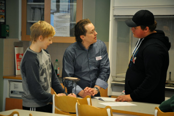
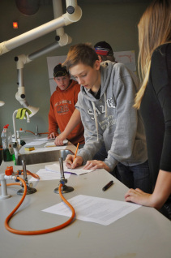
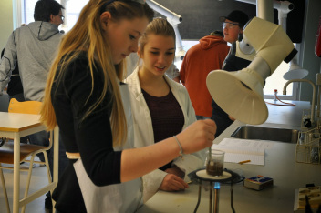
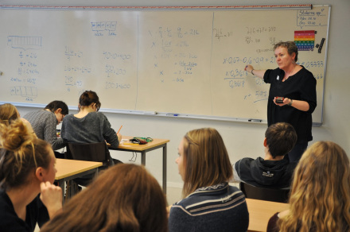
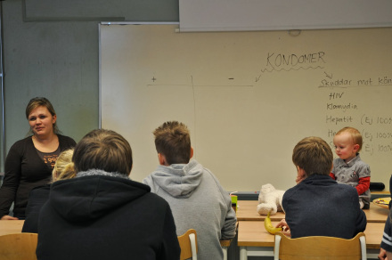
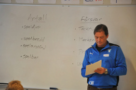
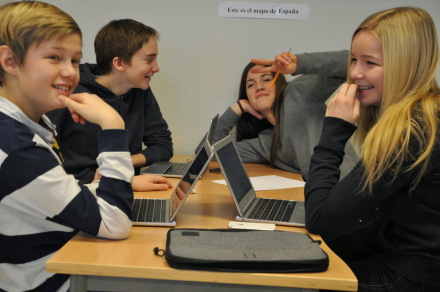
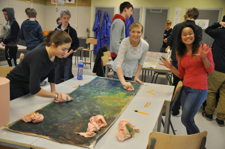
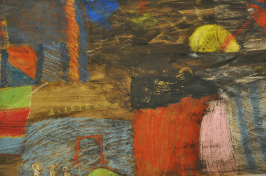

Lördagen den 1 februari öppnade årskurs 7-9 på Korsavadsskolan upp sina klassrumsdörrar för alla som vill se och höra vad man gör i skolan. Blivande 7:or och föräldrar, skolpolitiker och andra intresserade kunde följa lektioner i allt från hemkunskap och musik till spanska och samhällskunskap. Det var både spännande och inspirerande att få se så många glada och engagerade elever och lärare arbeta med massor av olika ämnen och uppgifter på en mängd olika sätt.
Här kommer några exempel på uppgifter som Korsavadsskolans elever jobbade med under dagen:
Eleverna i klass 8E fick en bägare med en blandning av sand och salt och deras uppgift var att planera, genomföra och utvärdera en undersökning där de skulle försöka skilja sanden och saltet från varandra.

NO-lärare Magnus Lassen Törn diskuterar kemiuppgiften med några av sina elever i klass 8E.
I elevernas planering skulle de:

Eleverna börjar med att planera hur de ska lösa uppgiften.
- beskriva vilket material de ville använda
- tydligt beskriva hur de tänkte genomföra undersökningen
- tydligt motivera varför de ville göra på det sättet
- beskriva felkällor och hur de försökte ta bort dessa
- beskriva risker med undersökningen och förklara hur de hanterade dem
Förutom instruktioner kring själva uppgiften gav NO-lärare Magnus Lassen Törn sina elever en definition av vad som menas med en naturvetenskaplig undersökning. Den lyder så här:
En naturvetenskaplig undersökning går ut på att få svar på en fråga eller bevisa ett påstående. För att göra detta genomförs mätningar och observationer. Det kan finnas faktorer som kan påverka undersökningens mätningar. Det kallas för felkällor. För att få så korrekt resultat som möjligt bör felkällor undvikas. Om felkällor undvikits och undersökningen i övrigt är tillräckligt bra utformad så ska det vara möjligt för någon annan att göra undersökningen och då få liknande resultat.

Eleverna tillsätter vatten och försöker sedan separera salt från sand med hjälp av värme.
Klass 9C jobbade med matematik och andel av andel. Av sin lärare Agata Nilsson fick de i uppdrag att lösa ett så kallat ”rikt matematiskt problem” (ett matematiskt problem som kan lösas på flera olika sätt) konstruerat av Karin Pollack och Cecilia Christiansen. Så här lyder det:
Hurra, jag har fått månadspeng till min tomma plånbok. Jag köper en väska för en tredjedel av månadspengen och går sedan och köper en tröja för 40% av det som är kvar. Till sist njuter jag av en glass för en tiondel av pengarna som är kvar efter mina två fina inköp. Nu finns det 216 kr i min plånbok. Hur mycket fick jag i månadspeng?

Agata Nilsson diskuterar olika elevers sätt att lösa uppgiften. ”Vilket sätt är enklast och smidigast tycker ni?”
Eleverna fick tid att försöka själva och sedan diskuterade man möjliga lösningar. För att kunna lösa problemet behöver man kunna decimaler, bråkräkning, procent och sambanden mellan dessa. Man behöver också kunna vad som menas med andelar och hur man gör en ekvationslösning.
I klass 8A hade man biologi tillsammans med Linda Persson och talade bland annat om könssjukdomar och diskuterade fördelar och nackdelar med kondomer.

Linda Persson har biologi med klass 8A och talar om bl a könssjukdomar och kondomer.

Joacim Walander ger sina elever i uppgift att i grupper resonera kring vad man ska tänka på i samband med anfall respektive försvar.
I klass 7D på Fotbolls-akademin hade eleverna idrott tillsammans med Joacim Walander och de satt i grupper och diskuterade vad man ska tänka på i samband med anfall respektive försvar.

Elever i klass 7D diskuterar och antecknar gemensamt vad de kommer fram till kring idrottstermerna ”anfall” och ”försvar”.

Eleverna använder Chromebooks och säger att de tycker att det är smidigt att använda dem för att t ex anteckna och dela sina anteckningar med varandra.
I klass 9D på Fotbollsakademin hade eleverna bild tillsammans med Susann Bengtsson Shepherd. Först ritade de med vaxkritor på långa remsor av golvtäckningspapper och Susann berättade att det pappret är ett bra material att jobba med eftersom det är så tåligt. Sedan bytte eleverna platser med varandra och på så vis fick alla elever till slut rita något på alla remsor. Därefter målade de över alltsamman, för att slutligen plocka fram motiven igen genom att gnugga bort överskottet av färg. Det låter kanske omständligt, men resultatet blev väldigt fint!

Eleverna i klass 9D har nu börjat gnugga fram motiven som de ritat med vaxkritor och dessa lyser allt mer fram genom färgen. Lägg märke till hur färgen som de målat över teckningarna med, på ett fint sätt binder ihop motiven.

Här ser du en del av en resultatet från bildlektionen med klass 9D.
Här kan du hitta fler bilder från dagen: https://plus.google.com/photos/101317858672125322888/albums/5975866546864955665?authkey=CIrt3Over6vgiAE
__________________________________
Charlotta Wasteson för Barn- och utbildningsförvaltningen i Simrishamn


{kind=link}
{kind=link}
{kind=link}
{kind=link}
{kind=link}
{kind=link}
{kind=link}
{kind=link}
{kind=link}
{kind=link}
{kind=link}
{kind=link}
{kind=link}